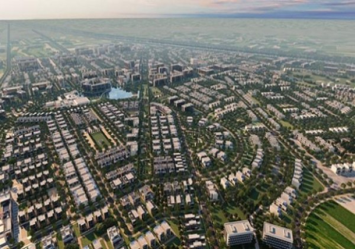
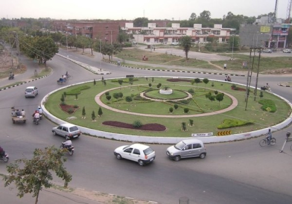
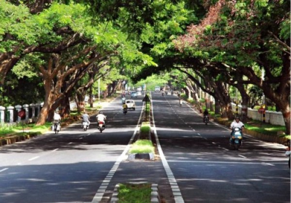
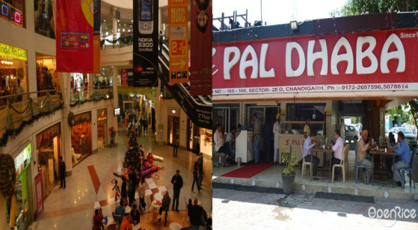
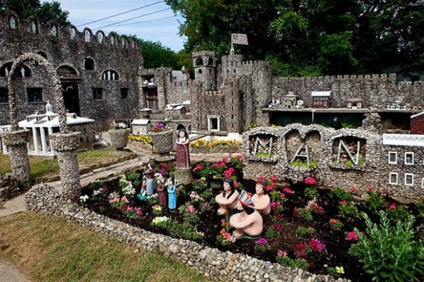
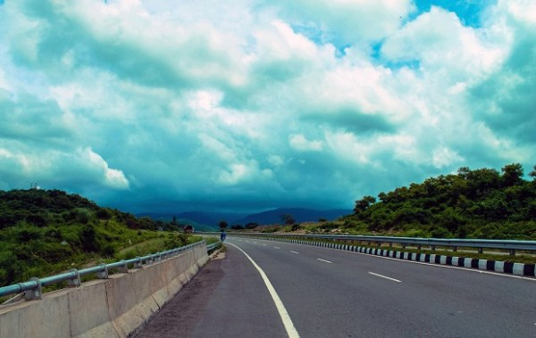
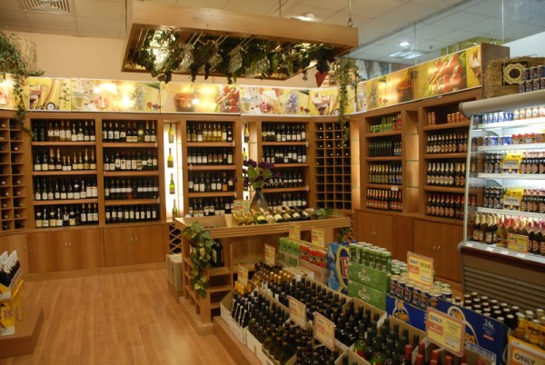

The people are more than lively; they eat great food and enjoy their booze like no other. The lively Punjabi community and their ever superior hospitality have no match in the world.
There are 10 convincing reasons which prove why Chandigarh is the best place to live. Let's have a look at each one of them
1. Well planned city
It is the first planned city in India. The master plan was designed by Swiss-French Architect Le Corbusier. However, most of the government buildings and housing was designed by Chandigarh Capital Project Team under the leadership of Pierre Jeanneret.
2. Amazing food
You would find a countless number of food items but certain things that everyone love in Chandigarh would be chole-bhature, mah ki dal, stuffed paranthas, chicken, lassi, curd and related milk products. You would get good quality everywhere ranging from a roadside Dhaba to a fine dining restaurant.3. Beautiful roads to drive on
The roads are beautiful and covered with trees. You will have an amazing experience while driving. Unlike Delhi or Mumbai, you won't feel frustrated in a traffic jam. The city is so small that there are hardly any traffic jams and you can get where you want without being very late.
4. Clean & green everywhere
Chandigarh is the first cleanest and greenest city in India and will also become the country's first solar city in 2016. Tree plantation and landscaping has been an integral part of Master Plan. They development authority always takes the initiative to ensure that the status is maintained.
5. Perfect blend of modernization & ethnicity
Chandigarh is a perfect blend of modernisation and ethnicity. There are Dhabas, restaurants, bistros, cafes, food courts, govt, hotels, university sasta cafes, boiled eggs on redis - all in the city.
6. Amazing Hangout Places
The city has a lot of discos and pubs. More than 15 parks are there in Chandigarh including Sukhna Lake, pinjore gardens, rock garden etc. You will never run out of places for a date here.
7. Amazing Girls
Girls in Chandigarh are the prettiest and most outspoken.8. Mountains in close proximity
The mountains are so close that it just takes half an hour drive to cross over the hills of Himachal Pradesh.
9. Daru Sasti
As it's a union territory, you can enjoy cheap liquor prices there. But don't drink & drive in Chandigarh. Traffic rules are strict and less corrupt.